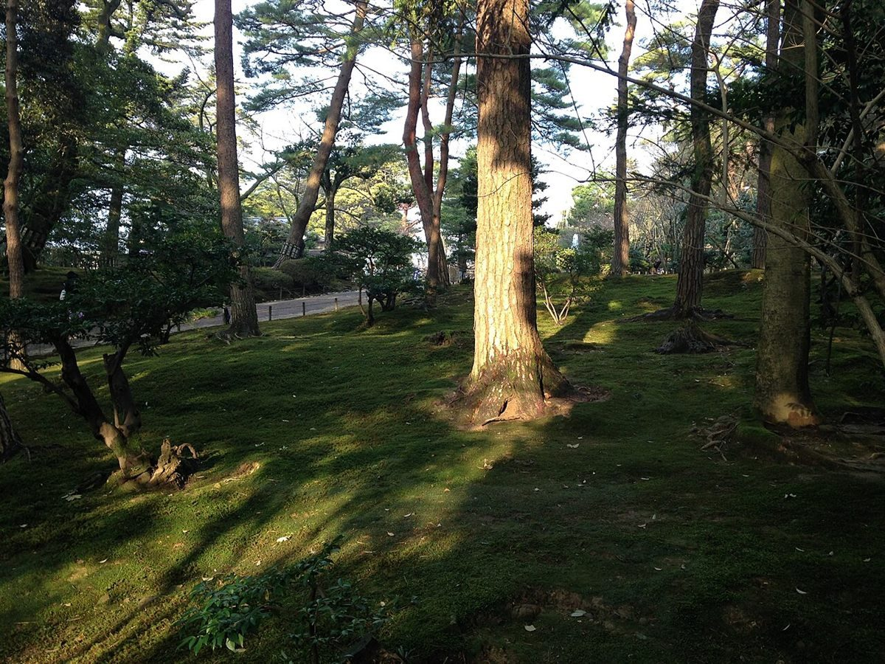
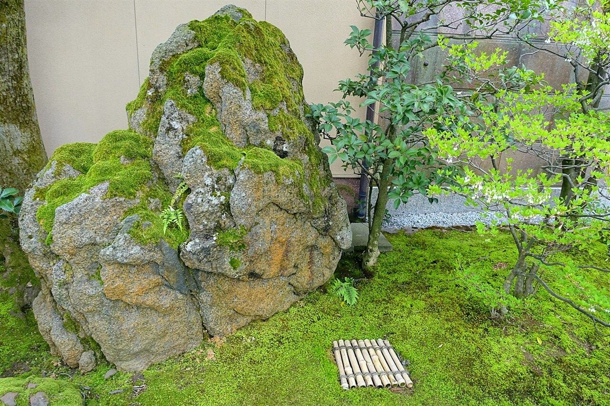
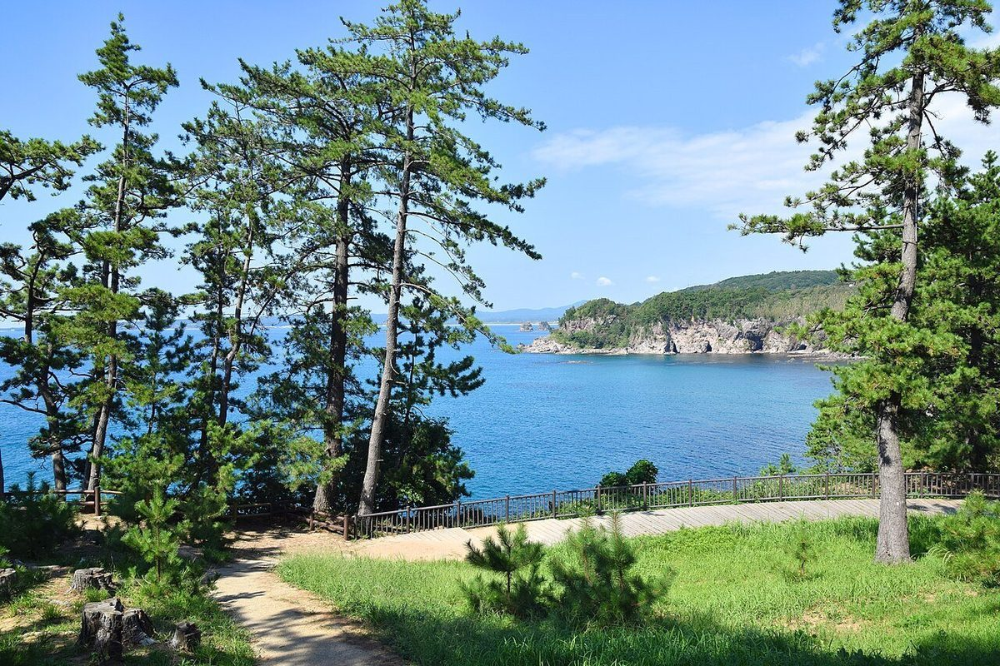

イメージ
01
朝のひと息
一日の始まりに、一杯の時間を持つ。そんな過ごし方は、誰にとっても身近なものです。慌ただしくなる前の短いひと息を、このページのテーマ案としました。
基本情報をまとめました。準備中の項目はお問い合わせください。
| 屋号 | 珈琲焙煎まめふく |
|---|---|
| 所在地 | 石川県かほく市学園台4丁目71 |
| 電話 | 076-209-5013 |
| @mamefuku_kahoku | |
| 営業時間 | 準備中(お問い合わせください) |
| 定休日 | 準備中(お問い合わせください) |
| スタッフ | 準備中(お問い合わせください) |
| お店のこだわり | 準備中(お問い合わせください) |
以下は、制作側が考えたテーマ案の解説です。店の紹介文ではなく、店の考え方や実際の特徴を述べたものではありません。

イメージ
一日の始まりに、一杯の時間を持つ。そんな過ごし方は、誰にとっても身近なものです。慌ただしくなる前の短いひと息を、このページのテーマ案としました。

イメージ
北陸の景色には、苔の緑のような静かな風景があります。視線を足元に向ける時間も、ひと息のきっかけになります。

イメージ。撮影地を示すものではありません
石川県は日本海に面しています。海や田んぼなど、この地域らしい風景を思い浮かべながら、お店を訪ねる道のりも楽しめるかもしれません。
この章は制作側の案です。店の考え方・由来は、公開前にご確認の上で差し替えます。
掲載写真はフリー素材のイメージです。実際の店舗・商品ではありません。石川県内のほか、他地域・海外で撮影されたものや撮影地不明のものを含みます。